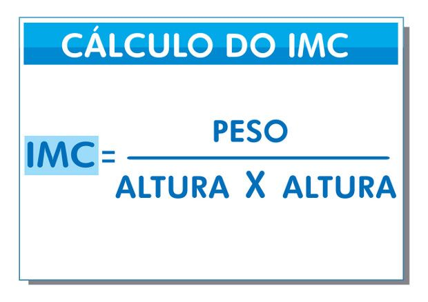
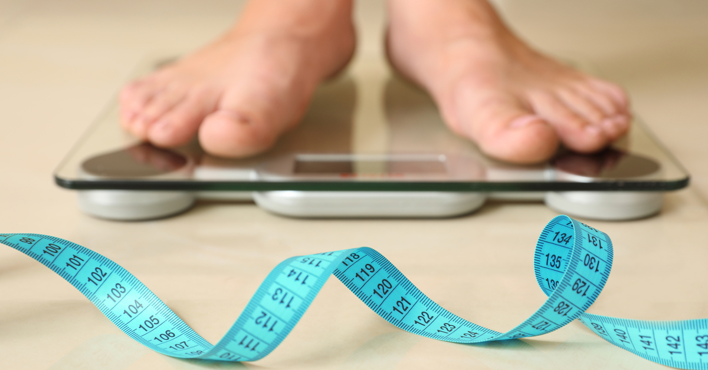

O que é o IMC?
IMC significa Índice de Massa Corporal e trata-se de uma medida do peso de cada pessoa, sendo uma relação entre a massa da pessoa e a sua altura ao quadrado.
A partir desse cálculo é possível avaliar se a pessoa está com um peso ideal ou se está abaixo ou acima do peso. Tanto níveis abaixo, como níveis acima do peso ideal, podem oferecer riscos à saúde do indivíduo.
Esta é uma medida de referência internacional reconhecida pela OMS (Organização Mundial da Saúde). É um cálculo simples para avaliar o peso, porém não mede diretamente a gordura corporal, já que não contempla a massa magra, massa gorda, líquidos e a estrutura óssea da pessoa em questão.
Hábitos de boa alimentação
A importância de estar dentro do peso ideal
É importante estar dentro do peso ideal porque o peso certo está intimamente ligado ao estado de saúde da pessoa. Ter um pequeno acumulo de gordura no corpo é importante para que hajam reservas de energia para quando a pessoa ficar doente ter tempo para se recuperar. No entanto, o excesso de gordura se acumula no fígado, na cintura e também dentro das artérias dificultando a passagem do sangue, e isso aumenta o risco de doenças cardíacas.
Por isso, estar dentro do peso ideal é importante para aumentar a saúde, prevenindo doenças cardiovasculares e aumentar a qualidade de vida. Assim, quem está abaixo do peso deve aumentar o volume muscular para aumentar de peso de forma saudável e quem está acima do peso, deve queimar gordura para ganhar saúde.
Como é calculado o IMC?
Para a sua posição na tabela do Índice de Massa Corporal, você precisa de dois valores: seu peso e altura. É só dividir o peso (em quilos) pelo quadrado da altura (em metros), que é obtido pela multiplicação da altura por ela mesma.
Então, a fórmula fica assim: IMC = Peso / Altura².

Casos não recomendados
Ao calcular o IMC, é importantíssimo levar em consideração se a pessoa é um atleta, uma criança ou um idoso. “No caso de uma pessoa que pratica musculação, por exemplo, o IMC pode muitas vezes não ser verdadeiro. O índice não pode ser interpretado do mesmo jeito que de uma pessoa sedentária, que provavelmente tem o índice de gordura muito maior. Então essa é uma crítica que se faz a usar o Índice de Massa Corporal de forma indiscriminada”, esclarece a médica.
Essas pessoas devem ser vistas por um profissional de Nutrição ou por um endrocnologista, que não se baseiam apenas pelo IMC. Para este público, são necessárias classificações específicas.
Eliziane Leite indica que as pessoas façam uma autocrítica da qualidade de alimentação e atividade física. Um IMC dentro da normalidade não é o suficiente para considerar a pessoa 100% saudável. “Às vezes ela tem uma massa corporal normal, mas não está se alimentando adequadamente e é uma pessoa extremamente sedentária. O IMC normal não isenta de qualquer preocupação com a sua qualidade de vida”, destaca.

Calcule o seu IMC!